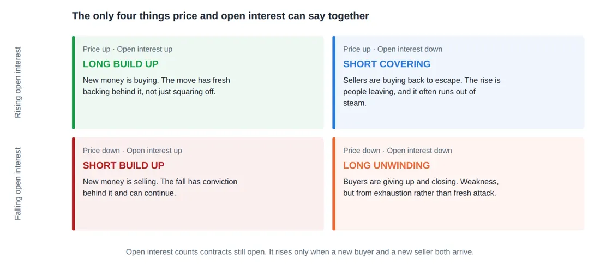
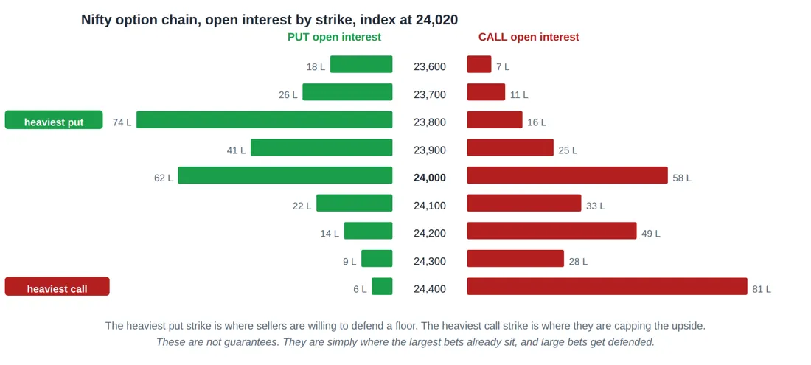

Library / MiyeeStockBuddy: The Complete Guide to Indian Markets
Part 13. Open Interest and the Option Chain
Open interest is the derivative market’s own record of how much money is actually committed, and it is published free by the exchanges. It is the closest thing available to seeing what the other side is doing. It is also the most commonly misread statistic in Indian trading, so this part goes slowly.
13.1 What Open Interest Actually Counts
Open interest is the number of contracts that are currently open and not yet settled. It is not volume, and confusing the two is the root of most bad open interest analysis.
Volume | Open interest | ||
|---|---|---|---|
Counts | Every contract traded during the day | Contracts still alive at the end of the day | |
Resets | To zero every morning | Never. It carries forward until contracts are closed or expire. | |
Rises when | Anybody trades, for any reason | A new buyer and a new seller both enter | |
Tells you | How much activity there was | How much money is committed and still at risk | |
The four cases, worked through New buyer meets new seller: a contract is created. Open interest rises by one. Existing buyer sells to an existing seller who is closing: a contract is destroyed. Open interest falls by one. Existing buyer sells to a new buyer: the contract changes hands. Open interest is unchanged. Volume rises in every one of those four cases. | |||
That last line is why volume alone cannot tell you whether money is entering or leaving. Open interest can.
13.2 The Only Four Things Price and Open Interest Can Say
Put the direction of the price beside the direction of open interest, and there are exactly four combinations. Each one means something different, and this table is the most practically useful thing in this part.

Figure 40. Price alone tells you the direction. Open interest tells you whether new money caused it or old money left. Read them together and the same one percent rise means two very different things.
Price | Open interest | Name | What it means | |
|---|---|---|---|---|
Up | Up | Long build up | New buyers entering. The rise has fresh money behind it. | |
Up | Down | Short covering | Sellers buying back to escape. A rise driven by exits, and it often fades. | |
Down | Up | Short build up | New sellers entering. The fall has conviction and can continue. | |
Down | Down | Long unwinding | Buyers giving up. Weakness from exhaustion rather than fresh attack. | |
The same one percent rise, two different meanings Monday: Nifty futures rise 1 percent, open interest rises 8 percent. New money is buying. Somebody is establishing positions. This rise has backing. Tuesday: Nifty futures rise 1 percent, open interest falls 11 percent. Nobody new is buying. Shorts are running for the exit and their buying is what lifted the price. Once they have finished covering, the buying stops, and rallies of this kind frequently stall. The price chart is identical on both days. The open interest is what tells them apart. | ||||
Careful here Open interest analysis is a description of positioning, not a prediction. A long build up can be followed by a fall, and often is, when the crowd that built the position is wrong. Treat it as evidence about who is committed, not as a forecast. | ||||
13.3 Reading the Option Chain
The option chain is a table of every listed strike for one expiry, with calls on one side and puts on the other. Every Indian broker shows one, and the NSE publishes it free. Six columns matter.
Column | What it tells you |
|---|---|
Open interest | Total contracts alive at that strike. Where the money is sitting. |
Change in open interest | Today’s addition or reduction. Where money is moving right now. Often more useful than the total. |
Volume | Activity today at that strike |
Implied volatility | How expensive that specific strike is |
Last traded price | The premium |
Bid and ask | What you can actually buy or sell at, which in far strikes can be alarmingly wide |
Support and resistance from open interest

L = lakh contracts
Figure 41. The option chain read as a map. Heavy put open interest below the index marks a level sellers are defending; heavy call open interest above marks a level they are capping. Both shift as the week goes on.
The logic runs like this. Somebody who has sold a large number of puts at 23,800 loses money if Nifty falls below that level. Those sellers are usually well capitalised institutions, and they have both the incentive and the means to defend the level. So heavy put open interest below the current price tends to act as a floor.
The reverse holds above. Heavy call open interest at 24,400 means large sellers who lose if Nifty rises past it, so that strike tends to act as a ceiling. Read together, the two heaviest strikes describe the range the option market currently expects.
Three cautions that keep this honest These are tendencies, not walls. When a genuine trend arrives, the level breaks and the sellers take the loss. Levels derived from open interest fail exactly when the market matters most. The heaviest strike moves. Check it daily rather than assuming last week’s level still holds, because as the index moves, position building moves with it. You cannot tell from open interest alone whether the writer is speculating or hedging an existing position. A fund selling calls against shares it owns is not defending anything, it is earning income and will happily let the shares go. |
13.4 Put Call Ratio
The put call ratio divides put open interest by call open interest. It is used as a sentiment gauge, and it is used badly more often than well.
PCR = total put open interest / total call open interest PCR below 0.7 more calls than puts outstanding. Bullish positioning, sometimes complacency. PCR around 1.0 balanced PCR above 1.3 more puts than calls. Bearish positioning, sometimes excessive fear. |
The complication is that PCR is often read as a contrarian indicator: an extremely high PCR is taken to mean everyone is already bearish, so there is nobody left to sell. That reading is sometimes right and sometimes disastrously wrong, because "everyone is bearish" is also what a genuine market crash looks like from the inside.
The rule to remember Use PCR for the change rather than the level. A PCR moving from 0.8 to 1.4 over three sessions says positioning has shifted sharply, which is real information. The absolute number on its own has almost no predictive value and should never be a reason to enter a trade by itself. |
13.5 Max Pain
Max pain is the strike at which the largest total value of options would expire worthless, meaning the price that causes the greatest aggregate loss to option buyers. The theory is that markets drift toward it into expiry, because option writers are large and have an interest in that outcome.
It is worth understanding and worth handling carefully. There is genuine evidence that prices cluster near heavy open interest strikes on expiry days. There is much weaker evidence that max pain has any predictive value earlier in the cycle, and the theory attributes more coordination to option writers than actually exists.
Careful here Treat max pain as one observation about where the largest positions sit, useful on the final day or two of a contract, and ignore it entirely for anything longer. Building a strategy on it, or trusting it during a trending market, has been an expensive lesson for a lot of people. |
13.6 A Practical Ten Minute Routine
If you want to use derivative data without trading derivatives, this is a routine that takes ten minutes after the close and genuinely informs your equity decisions.
1. Check India VIX and where it sits against its own range over the last few months. This tells you whether the market is calm or fearful, and whether options are cheap or dear.
2. Look at Nifty futures open interest against the price move. Which of the four quadrants was today?
3. Find the strikes with the heaviest call and put open interest. That is the range the option market is currently pricing.
4. Note the change in open interest, not just the total, and see which strikes gained the most today. That is where money moved.
5. Check the FII derivative positions published every evening, particularly whether they are net long or short index futures.
6. Write down one sentence describing what all of that says. If you cannot write the sentence, the data was not clear enough to act on, which is itself a useful conclusion.
© Vipin Nair. This guide is for reading online only. Copying, downloading, printing and redistribution are not permitted. For study and general reference; not legal, tax or investment advice.